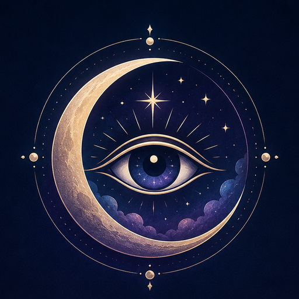

DREAMS, PATTERNS, AND PERSONAL MEANING
Private journalDreams remain on this device unless you export them.
Dream databaseSearch symbols, actions, emotions, people, places, and experiences.
Reflective guidanceConsider multiple possibilities rather than one fixed answer.
Explore your dreams with more context and less certainty.
Record what you remember, examine possible meanings, notice recurring patterns, and learn how dreams have been understood through science, history, and culture.
DREAM INTERPRETER
What happened in your dream?
Complete the form once, then submit it for a reflective interpretation.
Somneiros offers reflective possibilities, not diagnosis, prediction, or medical advice.
PRIVATE JOURNAL
Your saved dreams
Entries remain in your browser unless you export or delete them.
DREAM INTERPRETATION DATABASE
Explore dream symbols and experiences
Search symbols, actions, emotions, people, places, dream experiences, and recurring situations.
UNDERSTANDING YOUR DREAMS
Learn about dreams and their significance
Explore sleep science, historical traditions, famous documented dream stories, and common symbols.
Historical and religious interpretations are presented as traditions. Symbol meanings are possibilities, not facts, diagnoses, or predictions.

ABOUT SOMNEIROS
Dream reflection with context, transparency, and respect for uncertainty.
Somneiros combines a private dream journal, an extensive Dream Interpretation Database, symbolic pattern exploration, and an educational dream library.
It connects scientific, cultural, psychological, historical, and personal perspectives without presenting any single interpretation as absolute.
Dreams can be meaningful without having one universal meaning. Somneiros helps you examine possibilities and identify the questions that matter to you.
Somneiros • Understand • Insight • Transform